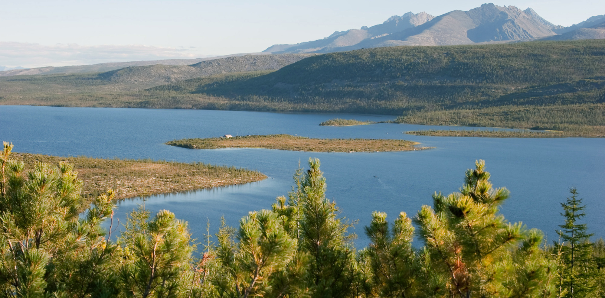

Penjelasan Umum
Bioma taiga merupakan hutan konifer yang berada di wilayah dingin seperti Kanada, Rusia, dan Siberia. Bioma ini dikenal sebagai hutan terbesar di dunia dan menjadi penghubung antara tundra dan hutan gugur. Pohon-pohon berdaun jarum tumbuh mendominasi wilayah taiga karena mampu bertahan di suhu dingin ekstrem. Musim dingin berlangsung sangat panjang sedangkan musim panas hanya berlangsung singkat. Taiga juga memiliki peran penting dalam menyerap karbon dioksida dan menjaga keseimbangan iklim bumi.
Ciri-Ciri Bioma
- Musim dingin sangat panjang dan dingin
- Pohon berdaun jarum mendominasi
- Curah hujan sedang, sebagian besar berupa salju
- Suhu rendah sepanjang tahun
- Tanah cukup asam dan kurang subur
Jenis Bioma
- Taiga Amerika Utara
- Taiga Eurasia
- Hutan Konifer Pegunungan
Flora dan Fauna
Flora taiga terdiri dari pohon pinus, cemara, spruce, dan fir. Fauna yang hidup di bioma ini antara lain serigala, rusa besar, beruang coklat, lynx, dan burung hutan. Banyak hewan memiliki bulu tebal untuk bertahan dari suhu dingin.